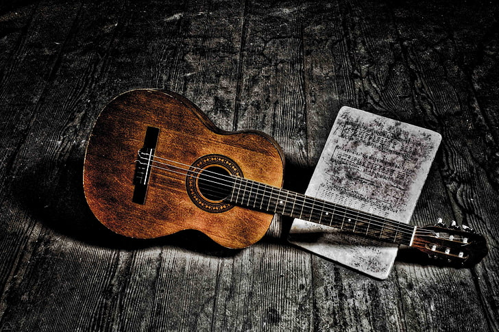
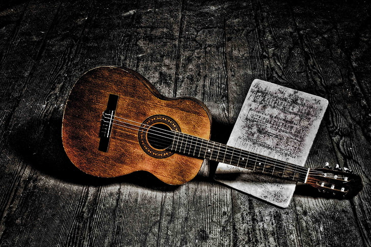
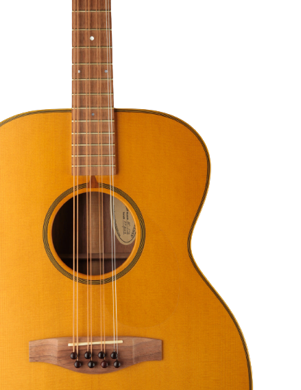
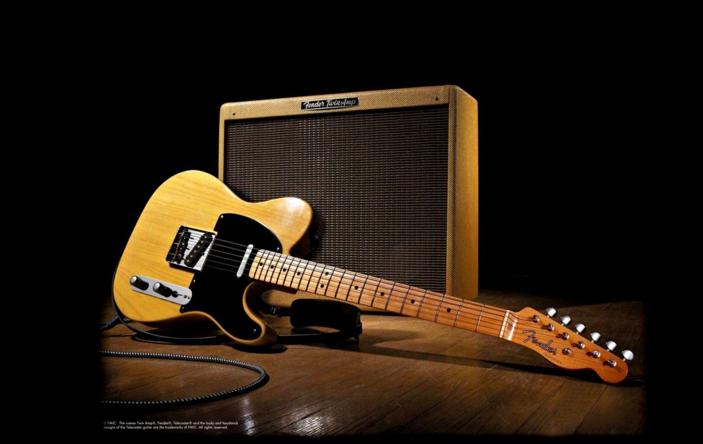

The guitar is a fretted musical instrument that typically has six
strings. It is usually held flat against the player's body and played
by strumming or plucking the strings with the dominant hand.The modern
word guitar and its antecedents have been applied to a wide variety of
chordophones since classical times, sometimes causing confusion. The
English word guitar, the German Gitarre, and the French guitare were
all adopted from the Spanish guitarra, which comes from the Andalusian
Arabic and the Latin cithara, which in turn came from the Ancient
Greek. This Greek word may also come from the Persian word Sihtar.

Acoustic guitars form several notable subcategories within the
acoustic guitar group: classical and flamenco guitars; steel-string
guitars, which include the flat-topped, or "folk", guitar;
twelve-string guitars; and the arched-top guitar. The acoustic
guitar group also includes unamplified guitars designed to play in
different registers, such as the acoustic bass guitar, which has a
similar tuning to that of the electric bass guitar.


Classical guitars, also known as "Spanish" guitars, are typically
strung with nylon strings, plucked with the fingers, played in a
seated position and are used to play a diversity of musical styles
including classical music. The classical guitar's wide, flat neck
allows the musician to play scales, arpeggios, and certain chord
forms more easily and with less adjacent string interference than on
other styles of guitar. Flamenco guitars are very similar in
construction, but they are associated with a more percussive
tone.
 

Flat-top guitars with steel strings are similar to the classical
guitar, however, the flat-top body size is usually significantly
larger than a classical guitar, and has a narrower, reinforced neck
and stronger structural design. The robust X-bracing typical of
flat-top guitars was developed in the 1840s by German-American
luthiers, of whom Christian Friedrich "C. F." Martin is the best
known. Originally used on gut-strung instruments, the strength of
the system allowed the later guitars to withstand the additional
tension of steel strings. Steel strings produce a brighter tone and
a louder sound.

An electric guitar is a guitar that requires external amplification
in order to be heard at typical performance volumes, unlike a
standard acoustic guitar. It uses one or more pickups to convert the
vibration of its strings into electrical signals, which ultimately
are reproduced as sound by loudspeakers. The sound is sometimes
shaped or electronically altered to achieve different timbres or
tonal qualities from that of an acoustic guitar via amplifier
settings or knobs on the guitar. Often, this is done through the use
of effects such as reverb, distortion and "overdrive"; the latter is
considered to be a key element of electric blues guitar music and
jazz and rock guitar playing. Designs also exist combining
attributes of the electric and acoustic guitars: the semi-acoustic
and acoustic-electric guitars.

By the 16th century, the guitar tuning of ADGBE had already been
adopted in Western culture; a lower E was later added on the bottom as
a sixth string. The result, known as "standard tuning", has the
strings tuned from a low E to a high E, traversing a two-octave range:
EADGBE.the tuning contained all perfect fourths, the range would be
two octaves plus one semitone; the high string would be an F, a
dissonant half-step from the low E and much out of place.
More Musical Instruments
Flute